Zhizhou Sha沙之洲
Zhizhou Sha
-
Ph.D. Student博士生
Department of Computer Science
The University of Texas at Austin 计算机科学系
得克萨斯大学奥斯汀分校 -
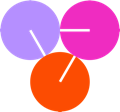
Research Intern, Summer 2026研究实习生（2026 年夏）
KV-Cache Quantization
Together AI KV-Cache 量化
Together AI -
B.Eng.
Computer Science and Technology
Tsinghua University 计算机科学与技术
清华大学
Who am I?关于我
I am a Ph.D. student in Computer Science at The University of Texas at Austin, advised by Qiang Liu and Zhangyang (Atlas) Wang.
I received my B.Eng. in Computer Science and Technology from Tsinghua University in 2025. I have been fortunate to intern at Together AI and ByteDance, to work with Prof. Zhuowen Tu on generative models at UC San Diego, and to work with Yingyu Liang, Zhenmei Shi, and Zhao Song on the theory of efficient deep learning.
我是沙之洲，得克萨斯大学奥斯汀分校计算机科学专业的博士生，导师是 Qiang Liu 和 Zhangyang (Atlas) Wang。
我 2025 年本科毕业于清华大学计算机科学与技术专业。我曾在 Together AI 和字节跳动实习，也有幸在 UC San Diego 跟随 Zhuowen Tu 教授研究生成模型，并与 Yingyu Liang、Zhenmei Shi、Zhao Song 合作研究高效深度学习理论。
Research Highlights研究亮点
I focus on LLM post-training, reinforcement learning, quantization, and agentic systems. For aligned collaborations, feel free to get in touch. 我的研究方向是大模型后训练、强化学习、量化和智能体系统。如果方向契合，欢迎联系我合作。
Quantization量化
Quantization-Aware Training量化感知训练
KV-Cache QuantizationKV-Cache 量化
Efficient Deep Learning Theory高效深度学习理论
Attention and Transformers注意力与 Transformer
Expressivity and Privacy表达能力与隐私
Generative Models生成模型
Image and Layout Generation图像与版面生成
Flow Models流模型
For open questions I am exploring, see Research Ideas. For code and smaller projects, see my GitHub.我正在思考的开放问题见研究想法，更多代码和小项目见我的 GitHub。
Featured Projects代表项目
2026
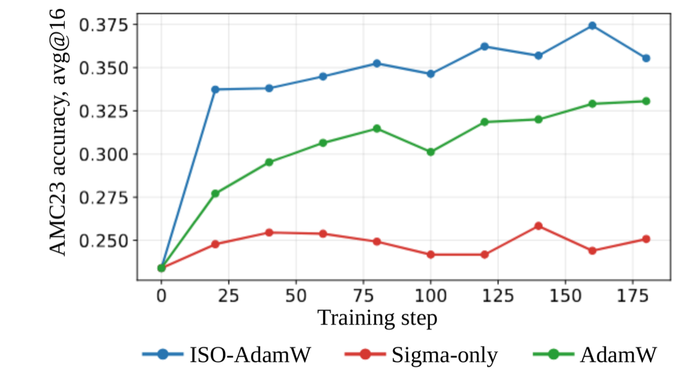
ISO: An RLVR-Native Optimization Stack
Inherit the spectrum, optimize the frames: ISO keeps each weight matrix's singular spectrum fixed and updates only its input and output singular frames. On Qwen3-4B-Base, ISO-AdamW reaches AdamW's 400-update accuracy in 280 updates with 27% less wall-clock time. 继承谱，优化框架：ISO 固定每个权重矩阵的奇异值谱，只更新输入和输出奇异框架。在 Qwen3-4B-Base 上，ISO-AdamW 用 280 次更新达到 AdamW 400 次更新的准确率，墙钟时间减少 27%。
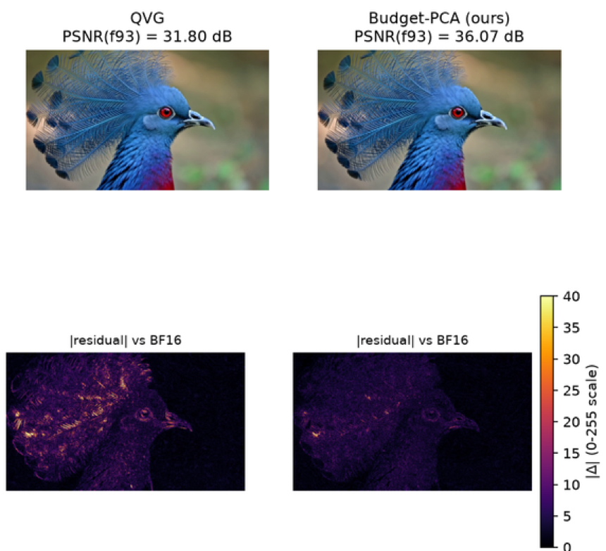
Budget-PCA: Low-Rank Compression of Video-Generation KV Caches
A calibration-free, fixed-cost method combining chunk-wise low-rank PCA with channel-wise asymmetric 2-bit residual quantization. Across three video-generation systems, it reduces storage from 16 to at most 2.326 bits per element, saving about 85%, and outperforms QVG, the state-of-the-art 2-bit video quantization method, on 11 of 18 metrics, including a 3.48 dB PSNR gain on LongCat-Video. 一种免校准、固定成本的方法，把分块低秩 PCA 和逐通道非对称 2-bit 残差量化结合起来。在三个视频生成系统上，它把存储从 16 bit 降到每元素最多 2.326 bit，节省约 85%，并在 18 项指标中的 11 项上优于目前最好的 2-bit 视频量化方法 QVG，其中 LongCat-Video 的 PSNR 提升 3.48 dB。
128K cache memory128K Cache 内存
BF1610.97 GiB
NVFP43.08 GiB
MXFP42.91 GiB
GLM-5.2 KV-Cache Quantization
Built an end-to-end cache-quantization evaluation pipeline for GLM-5.2 on reasoning and long-context benchmarks, including GPQA and RULER, reducing 128K cache memory from 10.97 GiB to 2.91–3.08 GiB. Analyzed numerical errors across cache components and proposed a hybrid-precision design balancing phase fidelity, tail behavior, and memory usage. 搭建 GLM-5.2 Cache 量化的端到端评测流程，覆盖 GPQA、RULER 等推理和长上下文基准，把 128K Cache 内存从 10.97 GiB 降到 2.91–3.08 GiB。分析各 Cache 分量的数值误差，并提出兼顾相位保真、尾部行为和内存占用的混合精度设计。
2025
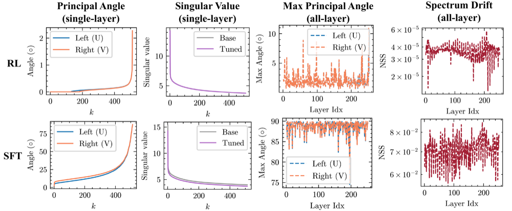
The Path Not Taken: RLVR Provably Learns Off the Principals
Identifies an isospectral pattern in RL post-training: RLVR preserves the singular spectrum, so weight updates are dominated by rotations in the U and V factors rather than changes in singular values, unlike the ~1.12× shrinkage seen with SFT. 发现 RL 后训练中的等谱现象：RLVR 保持奇异值谱不变，权重更新主要是 U、V 因子的旋转，而不是奇异值大小的变化；SFT 后奇异值则有约 1.12 倍的收缩。
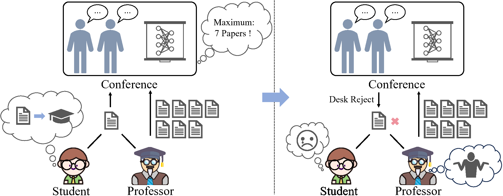
Dissecting Submission Limit in Desk-Rejections: A Mathematical Analysis of Fairness in AI Conference Policies
Shows that once a paper has more than three authors, desk-rejection under submission limits can no longer avoid penalizing innocent authors, then proposes a fairness-aware mechanism. Individual fairness is NP-hard to optimize, while group fairness is solved efficiently by linear programming. 证明当作者数超过三人时，按投稿上限拒稿无法避免波及无辜作者，并提出兼顾公平的拒稿机制。其中个体公平的优化是 NP-hard，群体公平可以用线性规划高效求解。
Show 3 more from 2025展开 2025 年另外 3 项
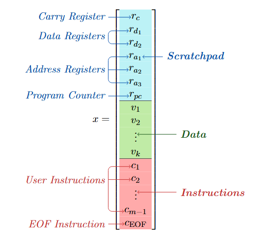
Looped ReLU MLPs May Be All You Need as Practical Programmable Computers
Proves that Looped ReLU MLPs are computationally complete by emulating a One-Instruction-Set Computer, so simple feed-forward layers with recurrent ReLU connections can act as general-purpose programmable systems. 通过模拟单指令集计算机，证明 Looped ReLU MLP 具有计算完备性：带循环连接的简单前馈 ReLU 网络就可以作为通用可编程系统。
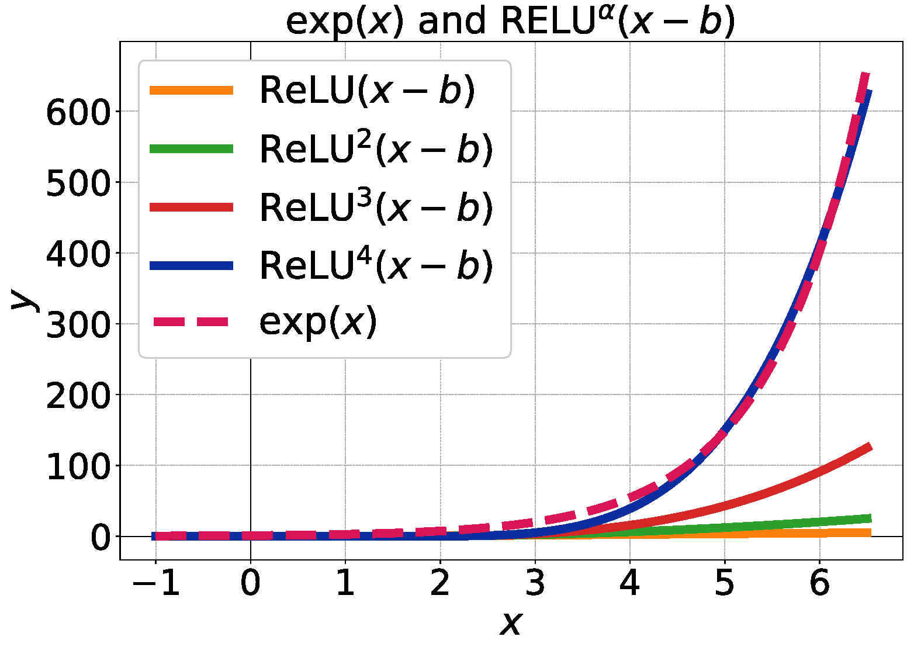
HSR-Enhanced Sparse Attention Acceleration
Leverages the sparsity of ReLU attention with a Half-Space Reporting data structure that locates active key-value pairs, reducing cross-attention complexity from O(mnd) to O(mn4/5d). 利用 ReLU 注意力的稀疏性，用半空间报告（HSR）数据结构定位活跃的键值对，把交叉注意力的复杂度从 O(mnd) 降到 O(mn4/5d)。
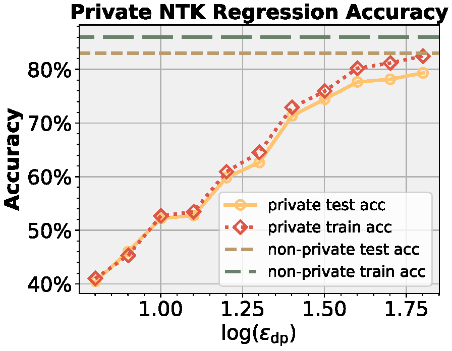
Differential Privacy Mechanisms in Neural Tangent Kernel Regression
Builds a differentially private NTK regression framework with the Gaussian Sampling Mechanism, adding formal privacy guarantees while preserving the positive semi-definiteness of the kernel matrix. 用高斯采样机制构建差分隐私 NTK 回归框架，在提供形式化隐私保证的同时保持核矩阵的半正定性。
2024
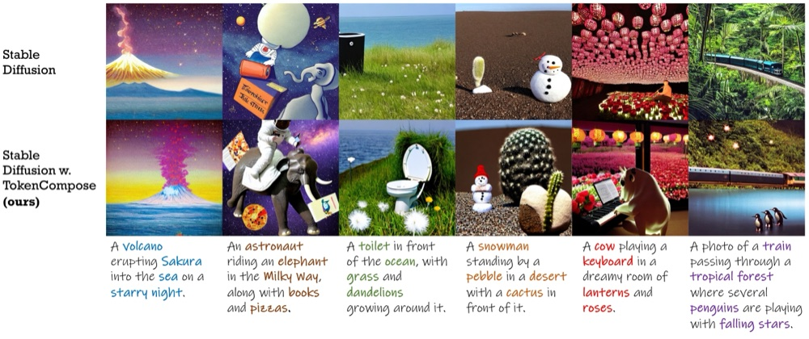
TokenCompose: Text-to-Image Diffusion with Token-level Supervision
Adds a token-level loss to Stable Diffusion fine-tuning, using POS tagging and DINOv2 segmentations as localized supervision. Raises the multi-object generation success rate from 28% to 52% with an FID of 20.19. 在 Stable Diffusion 微调中加入 token 级损失，用词性标注和 DINOv2 分割提供局部监督，把多物体生成成功率从 28% 提升到 52%，FID 为 20.19。
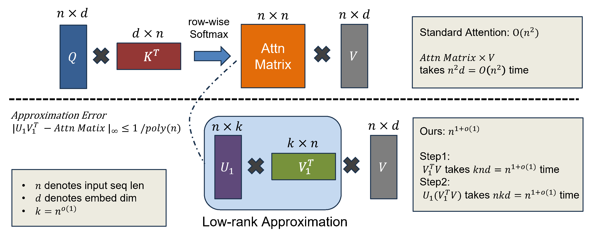
Multi-Layer Transformers Gradient Can be Approximated in Almost Linear Time
Approximates Transformer gradients with a low-rank Taylor expansion of attention's exponential operations, reducing gradient computation from O(n2) to almost-linear O(n1+o(1)) with provably bounded error. 对注意力中的指数运算做 Taylor 展开并低秩近似，把 Transformer 梯度计算从 O(n2) 降到近线性的 O(n1+o(1))，误差有理论界。
Show 2 more from 2024展开 2024 年另外 2 项
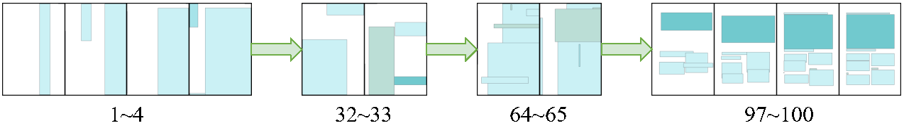
Dolfin: Diffusion Layout Transformers without Autoencoder
Enhances the layout generation capability of diffusion models by removing the autoencoder. 去掉自编码器，增强扩散模型的版面生成能力。
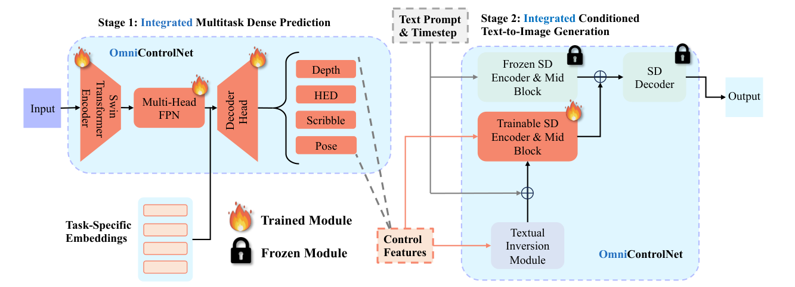
OmniControlNet: Dual-stage Integration for Conditional Image Generation
Unifies external condition control for image generation in a single dense model. 把图像生成的外部条件控制统一到一个稠密模型中。
Recent News近期动态
-
2026/10
Poster Poster on understanding and optimizing RLVR through model geometry at the IFML Fall Symposium 2026 in Austin.在奥斯汀 IFML Fall Symposium 2026 展示海报，主题是从模型几何理解和优化 RLVR。
-
2026/09
Paper QATFactory, a deployment-aligned framework for quantization-aware training, is on arXiv.面向部署的量化感知训练框架 QATFactory 已发布在 arXiv。 Paper
-
2026/07
Paper ISO: An RLVR-Native Optimization Stack is on arXiv.论文 ISO: An RLVR-Native Optimization Stack 已发布在 arXiv。 Paper
-
2026/05
Internship Started a summer research internship at Together AI, working on KV-cache quantization.开始在 Together AI 暑期研究实习，方向是 KV-Cache 量化。
-
2025/11
Spotlight The Path Not Taken is on arXiv. A preliminary version was accepted as a spotlight at the NeurIPS 2025 Workshop on Efficient Reasoning.The Path Not Taken 已发布在 arXiv，早期版本被 NeurIPS 2025 Efficient Reasoning Workshop 接收为 Spotlight。 Paper
-
2025/08
Milestone Started my Ph.D. in Computer Science at UT Austin.开始在 UT Austin 攻读计算机科学博士。
Work工作与科研经历
Together AI
Budget-PCA for video-generation KV caches; GLM-5.2 cache-quantization evaluation视频生成 KV Cache 压缩 Budget-PCA；GLM-5.2 Cache 量化评测
Research Intern研究实习生 May 2026 - Aug 2026
Efficient Deep Learning Theory高效深度学习理论
Research collaboration, advised by Yingyu Liang and Zhenmei Shi科研合作，导师 Yingyu Liang 和 Zhenmei Shi
Undergraduate Researcher本科生研究员 Mar 2024 - Apr 2025
ByteDance
Automated content moderation with BERT-based models and daily incremental learning基于 BERT 模型和每日增量学习的自动内容审核
Research Intern研究实习生 Dec 2023 - Jan 2024
mlPC Lab, UC San Diego
Compositional generation in text-to-image diffusion, advised by Zhuowen Tu文生图扩散模型的组合生成，导师 Zhuowen Tu
Undergraduate Researcher本科生研究员 Jun 2023 - Dec 2023
Education教育背景
The University of Texas at Austin (UT Austin)得克萨斯大学奥斯汀分校（UT Austin）
Austin, Texas, United States美国得克萨斯州奥斯汀
Doctor of Philosophy (Ph.D.) in Computer Science计算机科学博士 Aug 2025 - Present
Research Focus:研究方向： LLM post-training, reinforcement learning, quantization.大模型后训练、强化学习、量化。
Tsinghua University (THU)清华大学
Beijing, China中国北京
Bachelor of Engineering in Computer Science and Technology计算机科学与技术工学学士 Sep 2020 - Jun 2025
Awards:奖项： Comprehensive Scholarship (Top 20%), 2023 and 2024.综合奖学金（前 20%），2023 年、2024 年。
Professional Service学术服务
- Conference Reviewer:会议审稿人： International Conference on Learning Representations (ICLR 2025, 2026); International Conference on Machine Learning (ICML 2025, 2026); IEEE/CVF Conference on Computer Vision and Pattern Recognition (CVPR 2026); AAAI Conference on Artificial Intelligence (AAAI 2025); IEEE/CVF Winter Conference on Applications of Computer Vision (WACV 2025)
Selected Publications代表论文
Selected recent and representative work across LLM post-training, efficient deep learning, and generative models.大模型后训练、高效深度学习和生成模型方向的近期代表工作。
-
2026
ISO: An RLVR-Native Optimization Stack
-
2026
QATFactory: A Versatile, Deployment-Aligned Framework for Quantization-aware Training
-
2025
The Path Not Taken: RLVR Provably Learns Off the Principals
-
2025
Dissecting Submission Limit in Desk-Rejections: A Mathematical Analysis of Fairness in AI Conference Policies
-
2025
Looped ReLU MLPs May Be All You Need as Practical Programmable Computers
-
2025
HSR-Enhanced Sparse Attention Acceleration
-
2025
Differential Privacy Mechanisms in Neural Tangent Kernel Regression
-
2024
TokenCompose: Text-to-Image Diffusion with Token-level Supervision
-
2024
Dolfin: Diffusion Layout Transformers without Autoencoder
-
2024
Multi-Layer Transformers Gradient Can be Approximated in Almost Linear Time
-
2024
OmniControlNet: Dual-stage Integration for Conditional Image Generation
See my Google Scholar profile for the complete list.完整论文列表见我的 Google Scholar 主页。
Selected Talks & Posters报告与海报
Selected Awards荣誉奖项
- [2024] Comprehensive Scholarship (Top 20%), Tsinghua University综合奖学金（前 20%），清华大学
- [2023] Comprehensive Scholarship (Top 20%), Tsinghua University综合奖学金（前 20%），清华大学